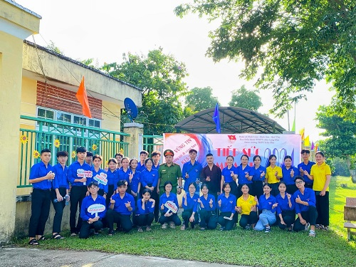
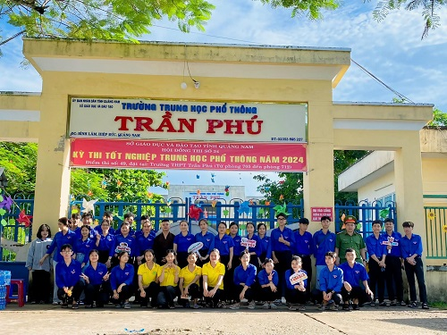
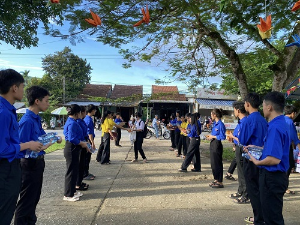
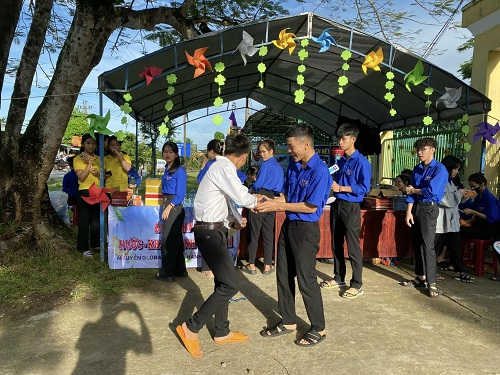
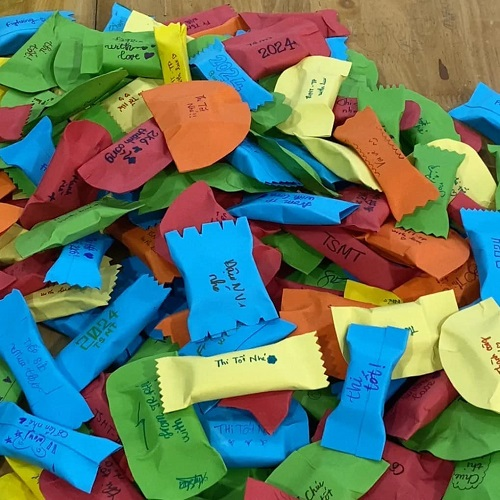
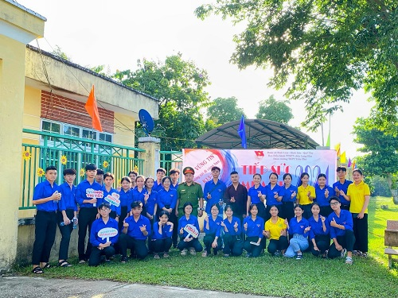
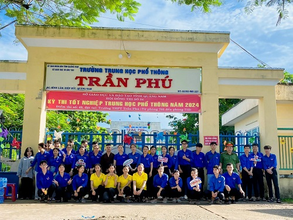
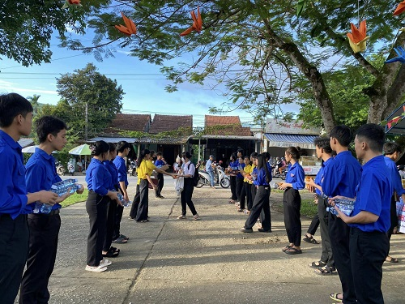
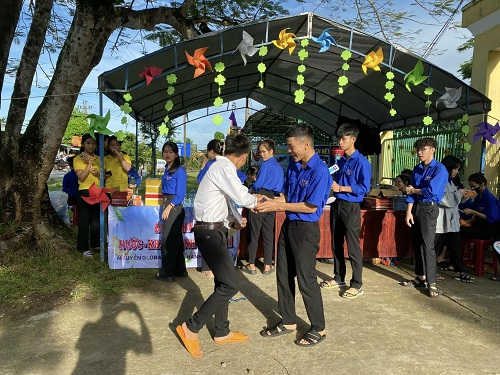
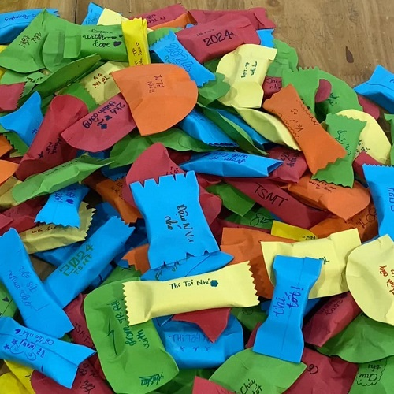

📌 "Tiếp sức mùa thi" 2024 tại trường THPT Trần Phú Thực hiện Kế hoạch tổ chức chương trình "Tiếp sức mùa thi" năm 2024 của BCH Đoàn trường, Đoàn trường cũng đã phối hợp với Đoàn các xã Bình Lâm, Bình Sơn, Quế Thọ, Lực lượng Công an, điện lực, Ban điều hành TTN Phật tử chùa Long Hoa,... đã thiết thực tổ chức các hoạt động tiếp nước, đồ ăn nhẹ, sữa, tặng quà handmade, bảo đảm an ninh trật tự hành lang trước trường, liên lạc với những thí sinh đi thi muộn,... Công tác "Tiếp sức mùa thi" với sự chuẩn bị chu đáo, sự chỉ đạo và hỗ trợ tích cực của đoàn các cấp, sự hưởng ứng tích cực của các lực lượng, phụ huynh và nhân dân trên địa bàn, điểm thi số 49 đặt tại trường THPT Trần Phú được diễn ra trong không khí an toàn, thân thiện, thoải mái để tạo được tâm lý tốt nhất cho các thí sinh yên tâm, tự tin bước vào phòng thi.